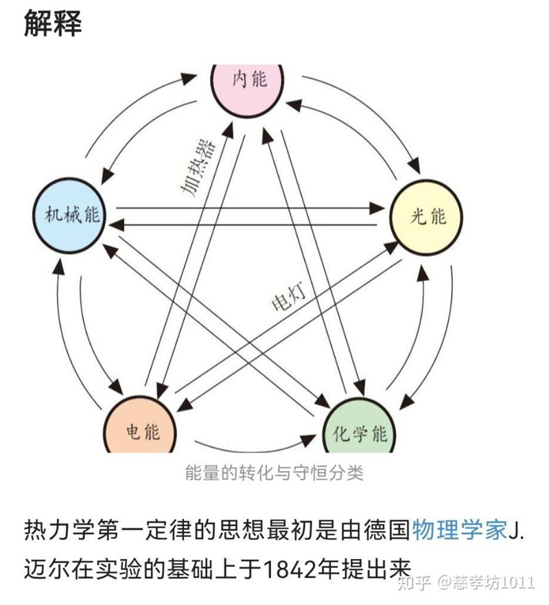

返回课程列表
第六课
振动基础
乐器振动模式与共振的物理本质
⏱️ 约35分钟
振动是音乐的灵魂。从琴弦的驻波到鼓膜的模态振动，从管乐器的空气柱共振到音乐厅的声学共鸣，振动无处不在。
琴弦的驻波与泛音
琴弦振动形成驻波，基频决定音高，泛音决定音色。不同乐器的泛音结构不同，这就是为什么同一个音在钢琴和小提琴上听起来不一样。

泛音系列与音色
泛音对音色的影响：
- 基频（第1泛音）：决定我们感知的音高，如A4=440Hz
- 第2泛音（八度）：880Hz，所有乐器都有，使声音饱满
- 第3泛音（纯五度）：1320Hz，铜管乐器中特别突出
- 高次泛音：赋予每种乐器独特的音色指纹，是音色识别的关键
共振与音乐厅声学
共振是振动系统在特定频率下响应最强的现象。音乐厅的设计就是要利用和控制共振，让每个座位都能听到均衡美妙的声音。
声学设计中的共振控制
音乐厅声学的振动学原理：
- 混响时间：交响乐厅约1.8-2.2秒，歌剧院约1.2-1.5秒，录音棚约0.3秒
- 反射设计：早期反射增强清晰度，后期反射增加空间感
- 共振消除：亥姆霍兹共振器吸收特定频率，消除驻波
- 扩散处理：不规则表面将声波散射到各个方向，使声场均匀